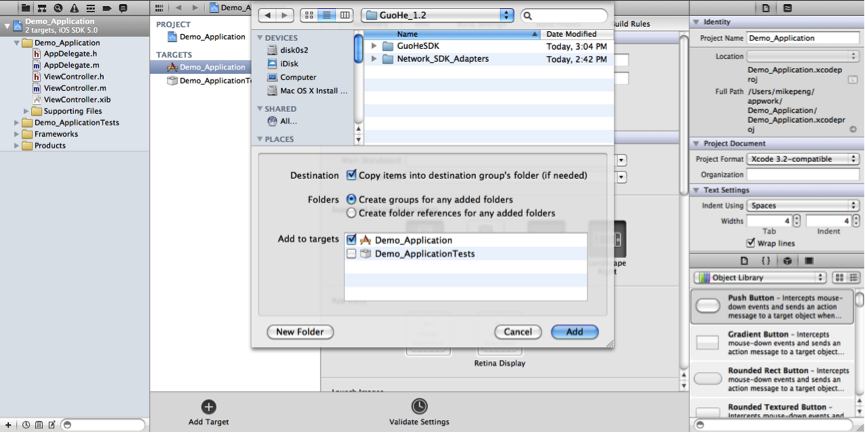

果合 iOS SDK 使用文档
本文档用于 iOS 开发者在应用中整合果合移动广告 SDK。
配置果合 SDK
SDK 文件内容
文件集中包含有：
| 文件名称 | 文件内容 |
|---|---|
| GuoHe SDK | 果合 SDK |
| Demo_Application | 果合 SDK 程序样例 |
| Network_SDK_Adapters | 广告平台SDK和果合提供的适配开放源码 |
| GuoHe_Integration_iOS.pdf | 果合 iOS SDK 使用文档（本文档） |
| Changelog.pdf | 果合iOS SDK更新日志 |
添加果合 SDK 文件到你的工程中
将 GuoHeSDK (支持iOS 4.0以上) 目录引用到您的应用工程中，如下图，GuoHeSDK 文件夹中的 TouchJSON, ASIHTTPRequest, Reachability 为开源框架，如果您的应用中已经含有，将其删除掉。 如果引用到 ASIHTTPRequest, Reachability 框架，需要在应用程序Target的Build Setting 里选择Header Search Paths ，并键入:
${SDK_DIR}/usr/include/libxml2
如果要在程序中支持平台广告(Admob等广告平台提供的广告)，请选择Network_SDK_Adapters目录中相应的广告平台文件夹，并引用到您的应用工程中。 
添加相应的framework
编译GuoHeSDK中的文件需要引用相应的framework，请添加如下framework，如果您的应用中已经含有，则不需重复添加：
- UIKit.framework
- Foundation.framework
- CoreGraphics.framework
- QuartzCore.framework
- CFNetwork.framework
- CoreLocation.framework
- SystemConfiguration.framework
- MobileCoreServices.framework
- libxml2.dylib
- libz.dylib
如果需要支持平台广告(即 Network_SDK_Adapter 目录)，需要额外引用各个平台广告所需的 framework 列举如下，如果您的应用中已经含有，不需重复添加:
| 广告平台 | 所需添加的框架 |
|---|---|
| AdMob |
|
| 有米 |
|
| 多盟 |
|
| 安沃 |
|
| InMobi |
|
| iAd |
|
| SmartMad 亿动智道 |
|
| Vpon |
|
| 微云 |
|
| 哇棒 |
|
| Millennial Media |
|
在你的工程代码中使用果合 SDK
继承 GHAdViewDelegate，定义广告位
选择将要显示果合广告位的指定 ViewController，在 ViewController.h 中继承 GHAdViewDelegate，并定义广告位，参考如下代码段。
#import <UIKit/UIKit.h>
#import "GHAdView.h"
#import "GHAdViewDelegate.h"
@interface GuoHeProSDKSample_iPhoneViewController : UIViewController <GHAdViewDelegate>
{
//广告位1
GHAdView *ghAdView1;
//广告位2
GHAdView *ghAdView2;
}
@property (nonatomic, retain) GHAdView *ghAdView1;
@property (nonatomic, retain) GHAdView *ghAdView2;
@end
请在 ViewController.m 中定义相应的 ghAdView 属性，并在 dealloc 方法中 release 它们。
实现 GHAdViewDelegate 的必选方法
在选定的 ViewController.m 中实现 GHAdViewDelegate 的方法， viewControllerForPresentingModalView 为必需实现，其他方法为可选实现，参考如下代码段。
#pragma mark -GHAdViewDelegate required method
- (UIViewController *)viewControllerForPresentingModalView
{
return self;
}
//注: 如果继承GHAdViewDelegate的文件不是ViewController，是AppDelegate，请将return self 改为 return [self viewControllerForPresentingModalView]
初始化广告位，请求广告, 暂停广告请求
在 ViewController 适当的代码位置(例如 viewDidLoad 方法中)添加代码，进行初始化广告位、请求广告和暂停广告请求的操作，参考如下代码段。
- (void)viewDidLoad
{
[super viewDidLoad];
//创建广告位1
ghAdView1 = [[GHAdView alloc] initWithAdUnitId:@"65d5c1fed049c02da59e48caae0c6ee9" size:CGSizeMake(320.0, 50.0)];
//设置委托
ghAdView1.delegate = self;
//请求广告
[ghAdView1 loadAd];
//设置frame并添加到View中
ghAdView1.frame = CGRectMake(0.0,0.0,320.0, 50.0);
[self.view addSubview:ghAdView1];
//创建广告位2
ghAdView2 = [[GHAdView alloc] initWithAdUnitId:@"e220084a61e0b5d49a403122569d79e7" size:CGSizeMake(250.0, 300.0)];
ghAdView2.delegate = self;
[ghAdView2 loadAd];
ghAdView2.frame = CGRectMake(35.0,60.0,250, 300.0);
[self.view addSubview:ghAdView2];
//创建广告位3
ghAdView3 = [[GHAdView alloc] initWithAdUnitId:@"dcd41b7048dd16a7d201cb5bfa4593ec" size:CGSizeMake(320.0, 100.0)];
ghAdView3.delegate = self;
[ghAdView3 loadAd];
ghAdView3.frame = CGRectMake(0.0,360.0,320.0, 100.0);
[self.view addSubview:ghAdView3];
}
//暂停广告请求
-(void)stopTheAdRequest
{
[ghAdView1 stopAdRequest];
}
//恢复广告请求
-(void)resumeTheAdRequest
{
[ghAdView1 resumeAdRequest];
}
实现 GHAdViewDelegate 的可选方法
GHAdViewDelegate 中的可选方法包括加载广告失败时调用的接口、加载广告成功时调用的接口、广告点击出现内容窗口时调用的接口、广告内容窗口关闭时调用的接口、广告位的关闭按钮被点击时调用的接口，开发者可以根据自己的需要实现这些接口。接口示例代码如下:
@optional
/*
* These callbacks notify you regarding whether the ad view (un)successfully loaded an ad.
*/
- (void)adViewDidFailToLoadAd:(GHAdView *)view;
- (void)adViewDidLoadAd:(GHAdView *)view;
/*
* These callbacks are triggered when the ad view is about to present/dismiss a modal view. If your application may be disrupted by these actions, you can use these notifications to handle them (for example, a game might need to pause/unpause).
*/
- (void)willPresentModalViewForAd:(GHAdView *)view;
- (void)didDismissModalViewForAd:(GHAdView *)view;
/*
* This method is set user's current location
*/
- (CLLocation *)locationInfo;
/*
* This method is called when the close button on adview is clicked.
*/
- (void)didClosedAdView:(GHAdView *)view;
设置自定义定向字段
对应 Web 端提供的自定义定向功能(参见注解)，SDK 端提供用户为广告位设置自定义定向字段的方法。只需在相应的位置添加如下代码即可，用户类型和对应的 Target Key 需要开发者定义。
//创建广告位1
ghAdView1 = [[GHAdView alloc] initWithAdUnitId:@"65d5c1fed049c02da59e48caae0c6ee9" size:CGSizeMake(320.0, 50.0)];
//设置委托
ghAdView1.delegate = self;
//设置自定义定向字段
if (用户类型1) {
[ghAdView1 setCustomerTargetKey:@"Target Key 1"];
} else if (用户类型2) {
[ghAdView1 setCustomerTargetKey:@"Target Key 2"];
} else {
[ghAdView1 setCustomerTargetKey:@"Target Key 3"];
}
//请求广告
[ghAdView1 loadAd];
//设置frame并添加到View中
ghAdView1.frame = CGRectMake(0.0,0.0,320.0, 50.0);
[self.view addSubview:ghAdView1];
自定义定向功能: 用以满足应用的特殊目标定向的需求 。用户可以在 Web 端为广告定义多个自定义定向字段(以逗号分隔，例如 key1, key2)；在应用中，可以通过为广告位设置一个自定义定向字段(例如 key1)对用户群做定向投放。规则举例: 广告A设置的自定义定向字段为 key1,key2，用户群a设置的定向字段为key1，用户群 b 未设置定向字段，用户群 c 设置定向字段为 key2，则 a 和 c 可以看到广告 A，b则看不到。